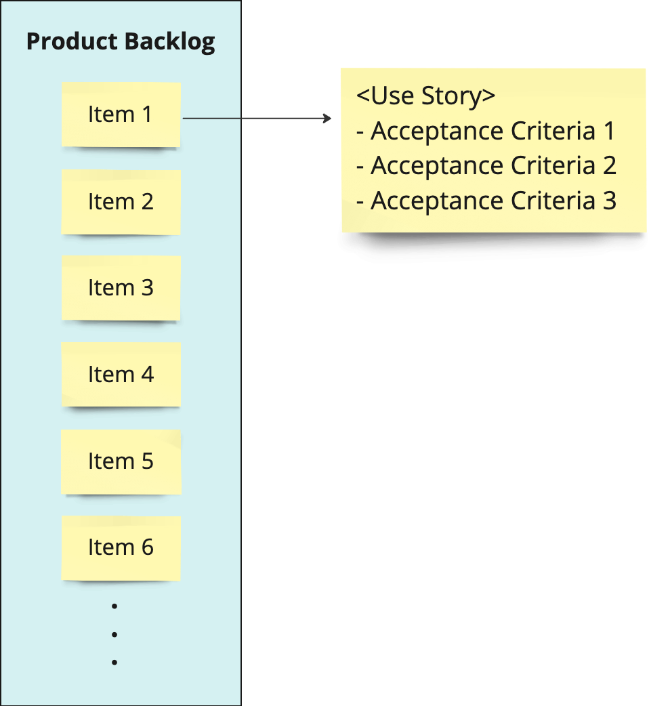

Scrum Framework

역할
Product Owner
비전을 가지고 Product Backlog(제품 요구사항을 나열한 것)를 관리
Produc Backlog의 우선 순위를 결정하고 릴리스 시기를 결정
쉽게 말해서 대장
Scrum Master
팀이 Scrum의 이론을 이해하고 적용에 도움을 주는 코치
중간중간 막히면 나서서 문제를 해소 (ex : 연휴가 끼었을때)
팀이 익숙해지면 존재감이 공기
Developers
제품 개발을 담당하는 멤버들. 엔지니어뿐만 아니라 기획과 디자이너도 포함
나, 너, 우리
아티팩트
Product Backlog
 요구사항을 우선순위가 높은 것부터 나열한 것으로 Product Owner가 관리
"Product Backlog Item" 요건을 나타내는 Item(JIRA의 티켓에 해당)
"User Story" 요구 사항의 간략한 설명
"Acceptance Criteria(수락 조건)" User Story만으로는 표현할 수 없는 상세한 내용과 제대로 개발할 수 있었는지의 판단 기준
ex : 로그인 기능에 비밀번호 찾기는 다음 Sprint에 추가 OK
Sprint Backlog
개발팀이 달성하는 목표와 이를 실현하기 위한 태스크를 나열한 것
예를 들어 엔지니어는 개발에 필요한 작업을 나열 (예 : 환경 구축, I / F 설계, DB 설계 등)
기획은 사양서 작성에 필요한 태스크를 리스트업하는 형태
Increment
릴리스 가능한 제품(Potentially Shippable Product Increment) 또는 최소 실행 가능 제품(Minimum Viable Product, MVP)
더 간단하게 말하면 성과물